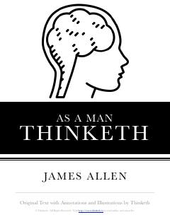

AAFikrlaringiz hayotingizni belgilaydi: o'z taqdiringizni boshqarish bo'yicha klassik qo'llanma.
Ushbu klassik asar inson fikrlari uning xarakteri va hayotiy sharoitlarini qanday shakllantirishi haqida so'z yuritadi. Muallif fikrlash qobiliyatini boshqarish orqali inson o'z taqdirini o'zgartirishi va muvaffaqiyatga erishishi mumkinligini ta'kidlaydi.